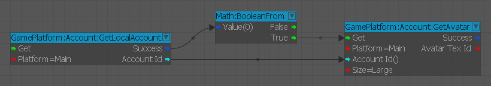
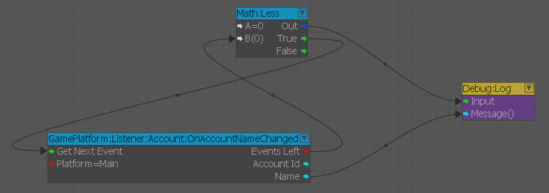
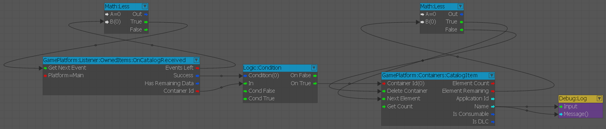
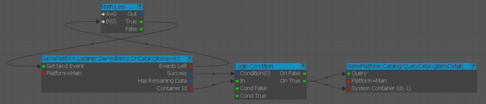
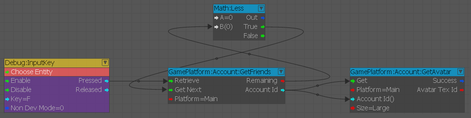

Обзор
Узлы Flow Graph можно использовать в любое время, поскольку long загружаются плагины. Это означает, что вы можете связать их с системными событиями и действиями, такими как загрузка уровня или процедуры UI.
Flow Graph Ограничения архитектуры
Из-за архитектуры системы Flow Graph эффективное взаимодействие с системой GamePlatform ограничивается следующим:
- Типы данных ограничены строками, 32-битными целыми числами и логическими значениями.
- Выполнение должно обрабатываться во время такта обновления Flow Graph. Узлы событий не запускаются сразу, а ставятся в очередь до следующего тика (кадра).
- Контейнеры ограничены, что затрудняет обработку данных массива.
Типы данных
Большинство идентификаторов, используемых службами GamePlatform, представляют собой варианты 64-битных типов.
Поскольку Flow Graph изначально не поддерживает 64-битные типы, преобразуйте их в строки для Flow Graph, а затем обратно в 64-битные типы для выполнения в API службы. Вот пример идентификатора, неявно преобразуемого в строку:

Пины «Идентификатор учетной записи» представляют собой строки, преобразованные из базового типа данных идентификатора учетной записи. Для Steam это будет идентификатор Steam 64, 64-битное число.
Обработка событий
Почти все события GamePlatform ставятся в очередь в узлах, называемых прослушивателями. Несколько замечаний об узлах-прослушивателях:
- Каждый отдельный узел Flow Graph одного и того же события дублирует данные события. Если у вас есть 2 узла одного и того же события, обработка события с одного узла не удалит его с любого другого.
- Каждый узел прослушивателя Flow Graph может поставить в очередь несколько событий, прежде чем ему будет передано выполнение. Вы должны извлечь все события, если они есть; вместо того, чтобы вытягивать одно событие за кадр, вытягивайте столько, сколько есть, иначе вы можете отстать.
- Некоторые узлы-прослушиватели будут использовать специальные узлы-контейнеры, которые более подробно описаны ниже.
Рекомендуется иметь только один узел событий для каждого уникального события, которое вы прослушиваете одновременно, поскольку также нет гарантии, какой узел выполнится первым.
Вот пример обработки событий с помощью узла Listener:

Вход «Получить следующее событие» на узле прослушивателя срабатывает как long, поскольку еще остались события для использования.
Данные о событиях на основе контейнера
Некоторые узлы прослушивателя предоставляют "Идентификатор контейнера", который можно использовать для доступа к данным массива.
В некоторых случаях они требуются для функций, которым в качестве входных данных требуется массив; например, получение подробной информации о нескольких элементах каталога. Некоторые подробности, касающиеся специальных контейнеров:
- Каждый контейнер уникален и доступен из любого графа. (Аналогично системным контейнерам).
- Все контейнеры являются постоянными и должны быть удалены вручную.
- Каждый Контейнер является специализированным и должен быть доступен соответствующему узлу Контейнера.
- Событие будет отправлено на каждый узел событий данного типа в любом активном Flow Graph. Когда каждый узел событий получает событие, для каждого узла (в серверной части) создается уникальный контейнер, к которому затем можно получить доступ с помощью узлов-контейнеров. Это означает, что данные будут дублироваться.
- Некоторым функциям требуются эти контейнеры, чтобы вы могли напрямую передавать все элементы из одного события в функцию другого.
Вот пример обработки события на основе контейнера:

Для каждого события каждый элемент в контейнере зацикливается. Контейнер удаляется, когда не остается элементов.
Поскольку несколько событий могут быть поставлены в очередь, может быть несколько контейнеров, ожидающих извлечения.
Ниже приведен пример функции, которая использует Контейнер, созданный узлом события: 
Удаление контейнера здесь не показано, поскольку узел события для вызываемой функции должен обрабатывать удаление контейнера, который использовался для его создания.
Упрощенные результаты массива
Узлы-контейнеры используются, когда узлу функции требуется ввод массива. Поскольку это не относится ко всем данным, которые можно получить от узла функции или события, некоторые узлы позволяют напрямую перебирать каждый элемент.
Ниже приведен пример узла, в котором каждый элемент указан отдельно без узла «Контейнер». 
Нет узла-контейнера, которым можно было бы управлять. Каждый вызов входа Получить перезапишет элементы, которые будут выведены узлом. Get Next используется для последовательного получения каждого элемента и может обрабатываться напрямую.